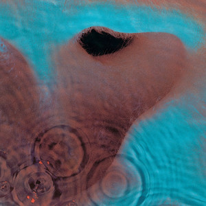
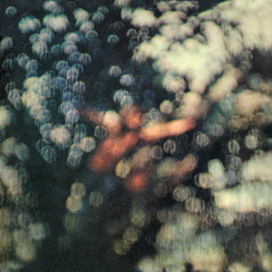
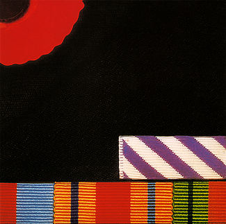
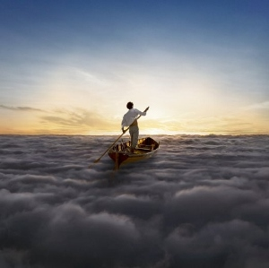

-
The Piper at the Gates of Dawn
The Piper at the Gates of Dawn is the debut album by English rock band Pink Floyd, released on 5 August 1967 by EMI Columbia. It is the only Pink Floyd album made under the leadership of founding member Syd Barrett (lead vocals, guitar); he wrote all but three tracks, with additional composition by members Roger Waters (bass, vocals), Nick Mason (drums), and Richard Wright (keyboards, vocals). The album followed the band's early chart success with the 1967 non-album singles "Arnold Layne" and "See Emily Play", as well as their influential performances at London's UFO Club. -
A Saucerful of Secrets
 A Saucerful of Secrets is the second studio album by the English rock band Pink Floyd, released on 28 June 1968 by EMI Columbia in the United Kingdom and on 27 July 1968 in the United States by Tower Records. During recording, the mental health of singer and guitarist Syd Barrett deteriorated, so David Gilmour was recruited; Barrett left the band before the album's completion.
A Saucerful of Secrets is the second studio album by the English rock band Pink Floyd, released on 28 June 1968 by EMI Columbia in the United Kingdom and on 27 July 1968 in the United States by Tower Records. During recording, the mental health of singer and guitarist Syd Barrett deteriorated, so David Gilmour was recruited; Barrett left the band before the album's completion.
-
More
More is the third studio album and first soundtrack album by English rock band Pink Floyd. It was released on 13 June 1969 in the United Kingdom by EMI Columbia and on 9 August 1969 in the United States by Tower Records. The soundtrack is for the film of the same name, which was primarily filmed on location on Ibiza and was the directorial debut of Barbet Schroeder. It was the band's first album without former leader Syd Barrett. -
Ummagumma
Ummagumma is the fourth album by English rock band Pink Floyd. It is a double album and it was released on 7 November 1969 by Harvest Records.[4] The first disc consists of live recordings from concerts at Mothers Club in Birmingham and the College of Commerce in Manchester that contained part of their normal set list of the time, while the second contains solo compositions by each member of the band recorded at EMI Studios (now Abbey Road Studios). The artwork was designed by regular Floyd collaborators Hipgnosis and features a number of pictures of the band combined to give a Droste effect. It was the last album cover to feature the band. -
Atom Heart Mother
 Atom Heart Mother is the fifth studio album by the English progressive rock band Pink Floyd. It was released by Harvest on 2 October 1970 in the UK, and by Capitol on 10 October 1970 in the US. It was recorded at EMI Studios (now Abbey Road Studios) in London, England, and was the band's first album to reach number 1 in the UK, while it reached number 55 in the US, eventually going gold there.
Atom Heart Mother is the fifth studio album by the English progressive rock band Pink Floyd. It was released by Harvest on 2 October 1970 in the UK, and by Capitol on 10 October 1970 in the US. It was recorded at EMI Studios (now Abbey Road Studios) in London, England, and was the band's first album to reach number 1 in the UK, while it reached number 55 in the US, eventually going gold there.
-
Meddle
 Meddle is the sixth studio album by English rock band Pink Floyd, released by Harvest Records. The album was produced between the band's touring commitments, from January to August 1971 at a series of locations around London, including EMI Studios (now Abbey Road Studios) and Morgan Studios. -
Obscured by Clouds
 Obscured by Clouds is the seventh studio album by the English progressive rock band Pink Floyd, released on 2 June 1972 by Harvest and Capitol Records. It serves as the soundtrack for the French film La Vallée, by Barbet Schroeder. It was recorded in two sessions in France, while Pink Floyd were in the midst of touring, and produced by the band. -
The Dark Side of the Moon
 The Dark Side of the Moon is the eighth studio album by the English rock band Pink Floyd, released on 1 March 1973 by Harvest Records. Primarily developed during live performances, the band premiered an early version of the suite several months before recording began. The record was conceived as an album that focused on the pressures faced by the band during their arduous lifestyle, and dealing with the apparent mental health problems suffered by former band member Syd Barrett, who departed the group in 1968. New material was recorded in two sessions in 1972 and 1973 at EMI Studios (now Abbey Road Studios) in London.
The Dark Side of the Moon is the eighth studio album by the English rock band Pink Floyd, released on 1 March 1973 by Harvest Records. Primarily developed during live performances, the band premiered an early version of the suite several months before recording began. The record was conceived as an album that focused on the pressures faced by the band during their arduous lifestyle, and dealing with the apparent mental health problems suffered by former band member Syd Barrett, who departed the group in 1968. New material was recorded in two sessions in 1972 and 1973 at EMI Studios (now Abbey Road Studios) in London.
-
Wish You Were Here
.png) Wish You Were Here is the ninth studio album by the English rock band Pink Floyd, released on 12 September 1975 through Harvest Records and Columbia Records, their first release for the latter. Based on material Pink Floyd composed while performing in Europe, Wish You Were Here was recorded over numerous sessions throughout 1975 at EMI Studios (now Abbey Road Studios) in London.
Wish You Were Here is the ninth studio album by the English rock band Pink Floyd, released on 12 September 1975 through Harvest Records and Columbia Records, their first release for the latter. Based on material Pink Floyd composed while performing in Europe, Wish You Were Here was recorded over numerous sessions throughout 1975 at EMI Studios (now Abbey Road Studios) in London.
-
Animals
 Animals is the tenth studio album by the English rock band Pink Floyd, released on 21 January 1977 through Harvest and Columbia Records. It was recorded at the band's Britannia Row Studios in London throughout 1976, and was produced by the band. The album continued the longform compositions that made up their previous works, including Wish You Were Here (1975). The album received unfavourable reviews from some critics but was commercially successful, peaking at number 2 in the UK and number 3 in the US, and it received much more favourable reviews in later years and is considered by many as one of the band's best works.
Animals is the tenth studio album by the English rock band Pink Floyd, released on 21 January 1977 through Harvest and Columbia Records. It was recorded at the band's Britannia Row Studios in London throughout 1976, and was produced by the band. The album continued the longform compositions that made up their previous works, including Wish You Were Here (1975). The album received unfavourable reviews from some critics but was commercially successful, peaking at number 2 in the UK and number 3 in the US, and it received much more favourable reviews in later years and is considered by many as one of the band's best works.
-
The Wall
The Wall is the eleventh studio album by the English progressive rock band Pink Floyd, released on 30 November 1979 by Harvest/EMI and Columbia/CBS Records. It is a rock opera that explores Pink, a jaded rock star whose eventual self-imposed isolation from society forms a figurative wall. The album was a commercial success, topping the US charts for 15 weeks and reaching number three in the UK. It initially received mixed reviews from critics, many of whom found it overblown and pretentious, but later received accolades as one of the greatest albums of all time and one of the band's finest works. -
The Final Cut
 The Final Cut is the 12th studio album by English rock band Pink Floyd, released on 21 March 1983 in the United Kingdom and on 2 April in the United States through Harvest and Columbia Records. It comprises unused material from the previous Pink Floyd album, The Wall (1979), alongside new material recorded throughout 1982. -
A Momentary Lapse of Reason
 A Momentary Lapse of Reason is the thirteenth studio album by the English progressive rock band Pink Floyd, released in the UK on 7 September 1987 by EMI and the following day in the US on Columbia. It was recorded primarily on guitarist David Gilmour's converted houseboat, Astoria.
A Momentary Lapse of Reason is the thirteenth studio album by the English progressive rock band Pink Floyd, released in the UK on 7 September 1987 by EMI and the following day in the US on Columbia. It was recorded primarily on guitarist David Gilmour's converted houseboat, Astoria.
-
The Division Bell
The Division Bell is the fourteenth album by the English progressive rock band Pink Floyd, released on 28 March 1994 by EMI Records in the United Kingdom and on 4 April by Columbia Records in the United States. -
The Endless River
 The Endless River is the fifteenth studio album by the English rock band Pink Floyd, released in November 2014 by Parlophone Records in Europe and Columbia Records in the rest of the world. It was the third Pink Floyd album recorded under the leadership of guitarist David Gilmour after the departure of bassist Roger Waters in 1985, and the first following the death of keyboardist Richard Wright in 2008, who appears posthumously. Gilmour said it will be the final Pink Floyd album.